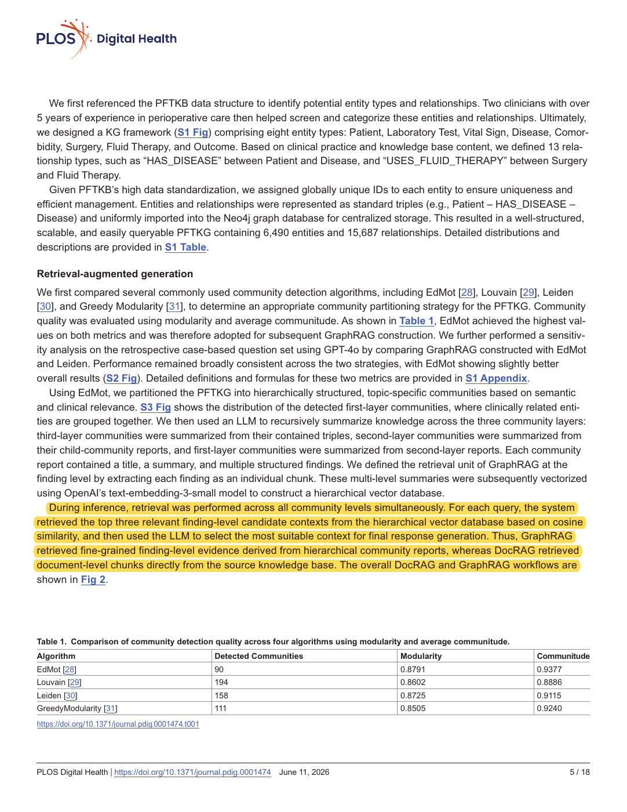
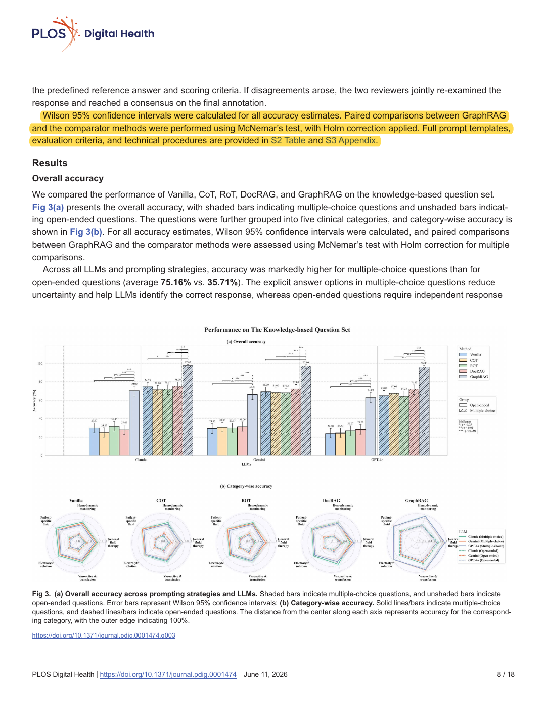
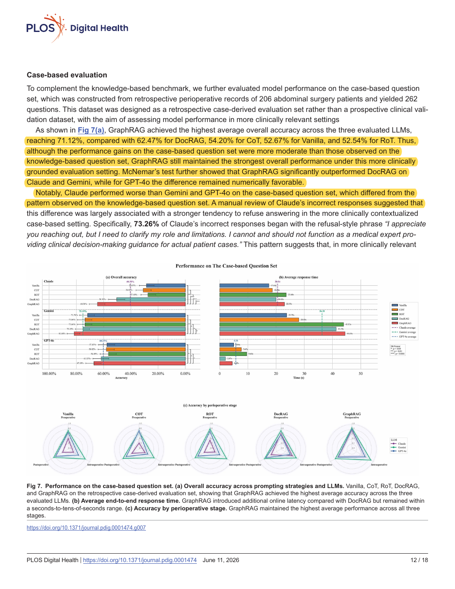

Retrieval and generation mechanism
Original PDF page 5. Finding-level candidate retrieval followed by LLM context selection.
Open marked PDF at this pageOpen unaltered PDF at this pageOpen local marked screenshotPublisher source

Jie Song, Jinhua Feng, Yuxin Zhang, Cheng Bi, Xin Zheng, Zhichuan Xu, Jiale Du, Mengqiao He, Meng Xiao, Xiaoran Li, Qiongfang Cao, Chi Zhang, Hao Yang, Rongrong Wu, and Bairong Shen · 2026
PLOS Digital Health, vol. 5, no. 6, e0001474
Does retrieval from structured clinical knowledge improve personalized fluid-therapy question answering over document retrieval and prompting alone?
The graph contained 6,490 entities and 15,687 relations. Hierarchical community summaries were divided into finding-level chunks. Retrieval selected three candidates by similarity, then an LLM selected a context for answer generation. GPT-4o, Claude Opus 4, and Gemini 2.5 Pro were tested with Vanilla, CoT, RoT, DocRAG, and GraphRAG. Evaluation used 300 knowledge-derived questions plus 262 retrospectively case-derived questions from 206 surgical patients. Two clinicians independently reviewed responses, resolving disagreement together; the study reported Wilson intervals and paired McNemar comparisons with Holm correction.
On the retrospective case-derived set, average GraphRAG accuracy was 71.12% versus 62.47% for DocRAG. Its paired advantage over DocRAG was statistically significant for Claude and Gemini; the GPT-4o advantage was numerical. Results remained well below perfect performance.
The task is clinical question answering, not OSCE disclosure control or nonlinear grading. KG-derived questions can favor in-domain retrieval; the additional case-derived set is retrospective, not prospective clinical validation. The single nurse comparison is exploratory. Neither graph grounding nor the reported performance establishes deterministic safety.
This is a strong reason to give the conventional comparator meaningful knowledge access rather than compare DualGraph-OSCE with an ungrounded LLM. It also exposes the precise distinction: GraphRAG selects clinical context for a generative answer, while DualGraph executes confirmed station rules against actual delivered events. Retrieval and rule execution address different failure modes and can be shared. The paper supports paired evaluation and independent clinical labels, but cannot justify claiming that paired graphs eliminate errors before measurement.
Related work: clinical KG-grounded generation. Baseline description: justify document- or graph-retrieval support in the conventional method. Evaluation methods: support paired binary comparisons, confidence intervals, and independent clinician annotation.
This is a proposed paraphrase for our manuscript, not a quotation from the source and not a reported result of DualGraph-OSCE.
Page numbers refer to the physical pages of the unaltered publisher PDF. Yellow marks identify the cited text; the whole page is shown so its context remains visible.
Original PDF page 5. Finding-level candidate retrieval followed by LLM context selection.

Original PDF page 8. Wilson intervals, McNemar paired tests, and Holm correction.

Original PDF page 12. Case-derived accuracy and a comparator; not a pharmacy-OSCE result.
